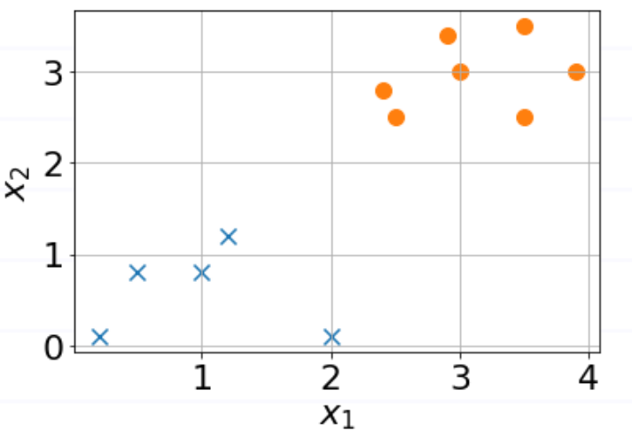

Evaluation Metrics#
(MLB) Two probability mass functions are given as
\(p(x)=[0.1,0.1,0.8]\) for \(x=0,1,2\)
\(q(x)=[0.8,0.1,0.1]\) for \(x=0,1,2\). Find the KL-divergence \(K L[p \| q]\) rounded off to the nearest integer. (Hint: \(K L[p \| q]=-\sum_{x} p(x) \log \left(\frac{q(x)}{p(x)}\right)\) )
0
-1
1
-2
2
(MLB) The model that classifies the two classes x and o is:

\( y=\sigma\left(x_{1}+x_{2}+3\right)\)
\( y=\sigma\left(x_{1}-x_{2}+3\right)\)
\( y=\sigma\left(x_{1}+x_{2}-3\right)\)
\( y=\sigma\left(x_{1}-x_{2}-3\right)\)
(MLB) The confusion matrix for a detection model for red roses is shown below.
Estimated True |
Estimated False |
|
|---|---|---|
Ground True |
20 |
5 |
Ground False |
15 |
30 |
The precision of the model is
2/3
6/7
4/5
1/6
None of these
(MLB) This task needs high precision, even if recall may be compromised, during automation. Mark True or False.
legal punishment of life imprisonment
scanning at an airport security check
gold search on the sandy surface of a beach
COVID test to recommend quarantine
tumour detection for leg amputation
credit card fraud detection
(MLB) Which of the following tasks need high precision while recall could be somewhat compromised?
Death sentence to a robber
Giving access to top-secret defense information
Screening of job applicants
Hanuman is asked to bring herbs to save Laxman
(MLB) You designed an ML model to detect covid. The model gave the following outputs on test data: P(covid=True) = [.9,.9,.8,.8,.6,.4, .8,.5,.4,.3,.3,.2], when the actual labels were True for the first half and False for the second half, respectively. What threshold for detection will achieve the best accuracy?
0.55
0.85
0.45
0.65
0.75
(MLB) You designed an ML model to detect covid. The model gave the following outputs on test data: P(covid=True) = [.9,.9,.8,.8,.6,.4, .8,.5,.4,.3,.3,.2], when the actual labels were True for the first half and False for the second half, respectively. At a threshold of 0.75, the F1 score of the model lies between:
0.70 - 0.75
0.75 - 0.80
0.80 - 0.85
0.65 - 0.70
0.60 - 0.65
(MLB) For a detection model, with threshold \(\theta\in(0,1)\), the precision of the model is found to be \(e^{\theta-1}\) and recall is \(e^{-5\theta}\). What is the value of \(\theta\) for which the F-measure is maximum?
(MLB) Subal’s mom gave him the following list of items to bring from the market: wheat-flour, rice, rajma, moongdal, jeera, salt, turmeric, ghee, oil. Subal lost the list on his way to the market and purchased following items: rice, rajma, potato-chips, laddoos, salt, ghee, oil, saunf. The F-measure of Subal is _____.